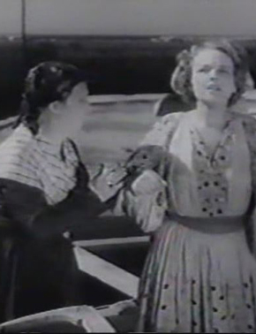
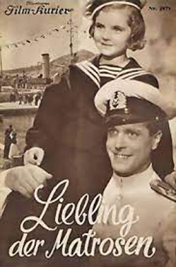
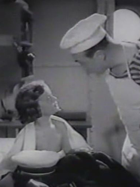

Darling of The Sailors
Traudl Stark
Wolf Albach-Retty
Hertha Feiler
Hans Frank
Hans Unterkircher
Willi Hufnagel
Ernst Pröckl
Philipp von Zeska
Polly Koß
SYNOPSIS
Little Christl lives in a village near the Yugoslavian coast. She gets on a warship where nobody knows her, and so the search for her identity begins. Supposedly she is the granddaughter of the American delegate in Dubrovnik. Lieutenant Juritsch is instructed to take the girl to the delegate, who is disinterested.
During his mission Juritsch gets to know passenger Mary O'Brien, not knowing she is the delegate's daughter. The delegate, on the other hand, gets to know Christl, without knowing who she is, when he is on board the ship. Misunderstandings accumulate until it emerges that Christl is the daughter of Mary's deceased sister, who had married without her father's approval. Fortunately the little girl has already managed to win over her grandfather.
A 1937 Austrian comedy film directed by Hans Hinrich and co-written by Dietlef Sierck (Douglas Sirk). It starred Traudl Stark, Wolf Albach-Retty and Richard Romanowsky. The film's sets were designed by the art director Hans Ledersteger. It was shot on location around Dubrovnik on the Croatian coast. Appparently, Traudl Stark was Austria's answer to the then-popular Shirley Temple.


